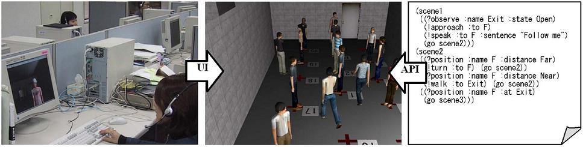

普段行われる避難訓練には，１）多勢が集まる必要がある，２）公共空間など実施が困難な場所がある，３）実際の避難現場は危険だが避難訓練は安全でなければならない，４）事前に定められた手順を追うだけで意志決定の訓練にはならない，などの問題がある．仮想空間はこれらの解決に有効な，１）自宅から参加可能，２）環境を低コストで準備可能，３）危険な状況を安全に体験可能，４）ゲーミング手法を適用可能，などの利点を持つ．
仮想空間における訓練は，乗り物の運転など個人タスクにおいては実用化されているが，避難訓練のような集団タスクにはあまり適用されていない．個人タスクの場合は物理シミュレーションにユーザの入力を反映させる仕組みがあれば良いが，集団タスクの場合はこれに加えて集団行動シミュレーションにユーザが参加する仕組みが必要となる．既存の群集シミュレーションは分析を目的としているため社会的インタラクションを物理法則で近似することが多く，ユーザ参加は考慮されていない．ユーザ参加を可能にするには，アバターと同じように反応し意思決定を行う社会的なエージェントが必要となる．そこで，社会的エージェントとユーザの間のインタラクションプロトコルをシナリオとして記述する言語Qと，記述されたインタラクションシナリオを実行するプラットフォームFreeWalkからなる仮想都市空間システムFreeWalk/Qを開発した．
仮想訓練に社会的エージェントを用いる既存システムではユーザとエージェントの能力に差があるためユーザ・エージェント各々の役割を相互に交換できない．そのようなアーキテクチャを大規模群集に適用すると，システムが複雑化する，参加人数の変動に対応できない，シミュレーションのテストにユーザが必要となる，などの問題が生じる．
FreeWalkではユーザとエージェントの区別を無くすために，歩く・話すといった外界への作用や，見る・聞くといった外界の知覚を仮想空間内で実行するモジュールを，APIおよびUIから同様に呼び出し可能にした．ユーザはUIを操作して，エージェントはAPIから制御されて，仮想空間の中で群集シミュレーションを共有する（図１）．この共有は，以下のようにAPI とUI の連結方法を工夫して実現した．

図１．避難群集シミュレーション
歩行：UIでは移動方向を入力するが，APIでは目的座標を指定する．この違いをAPIの中で吸収し，移動方向から次の一歩を生成する共通の歩行モジュールを組み込んだ．
対話：ユーザは音声で話し，エージェントはテキストで話す．そこで，エージェントとユーザが入り混じった集団の対話を効率良く扱うために，UI 間では音声通信，API間ではテキスト通信，UI-API間では音声合成認識エンジンを用いる対話モジュールを設計した．
ジェスチャー：抽象度の低いUI用モジュールと，それらのモジュールを呼び出す抽象的なAPI用モジュールを実装し，階層的なインタフェースを構築した．
エージェントの知的振る舞いは，その内部モデルを高度に作り上げることで達成しようとするのが一般的である．しかしながら，集団全体を知的に振る舞わせるには，各エージェントが自分の役割に従って行動する能力，すなわち外部モデルを設計する必要がある．
Qはエージェントの内部モデルを気にすることなく, エージェント間のプロトコルを記述できる言語である．拡張有限状態機械を記述モデルとしており，状態が場面に，入力が知覚に，出力が作用に対応する．これにより，「場面Aで現象Bを観察したらCを行え」といった各状況における特定の行動ルールの蓄積であるインタラクションシナリオによって役割ごとの振る舞いを定義できる．図２に示すインタラクションパターンカードは，応用分野特有の行動パターン（表）と各応用で異なるパラメータ（値）にシナリオを分離することで，記述を効率的かつ容易にする．
FreeWalkエージェントはインタラクションシナリオに従って行動する（図１）．「?」から始まるのは知覚コマンドであり，「!」から始まるのは作用コマンドである．各コマンドがQ処理系によって解釈されると，対応するAPIが呼び出される．処理系はイベント駆動型であり，各場面（scene）にある知覚コマンド群を並行観測可能である．
文献：
Hideyuki Nakanishi and Toru Ishida. FreeWalk/Q: Social Interaction Platform in Virtual Space. ACM Symposium on Virtual Reality Software and Technology (VRST2004), 2004.
連絡先：
京都大学 社会情報学専攻 中西英之 nakanishi at i.kyoto-u.ac.jp